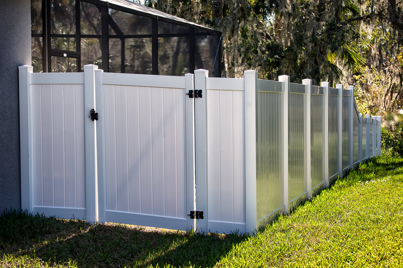

Wood or vinyl
Painted wood and vinyl picket are different materials and different upkeep.
Picket fencing
Picket fences for front yards and side yards that have to stay open. In Fargo that usually means a short line, in wood or vinyl, not a privacy panel with the top cut into points.


A picket fence is the right front-yard fence when you want a boundary and the city wants drivers to see past it. It will not give you a private patio. If that is the job, the privacy fence starts at the side of the house, and the picket stays out front.
Spacing is the detail people skip. Pack the pickets tight and a 4-foot fence may no longer count as open, which drops the allowed height. We space them for the rule, not for a photo. A picket also will not hold a determined dog. If containment is the job, say so and we will talk about height and gaps.
We price the line on the lot. These are the pieces that move the number. We do not publish a per-foot menu.
Painted wood and vinyl picket are different materials and different upkeep.
Three feet and four feet are both common, and the city decides which one your pattern can be.
Wider gaps keep the fence in the open category. Tight gaps can push you into the solid-fence limit.
The sight triangle can shorten or move part of the run.
A walk gate on a front walk is usual. A drive gate is a separate build.
Frost-lifted walks make a gate drag. We set the swing with that in mind.
A solid fence is limited to 3 feet. A fence that is at least 75 percent light-permeable may go to 4 feet. A normal spaced picket usually qualifies for 4 feet. A corner lot still has to keep the sight triangle clear. The city’s residential fence handout is the sheet we follow, and zoning on the parcel can change it.
Wood if you want to paint it to the trim and you will keep a finish on it. Vinyl if you want the same look without that upkeep. Both get posts set in concrete. Vinyl is not attached to old wood posts.
A short, spaced picket will not hold most dogs. The gaps and the height are the point of a front-yard fence. If the dog is the reason for the fence, use a taller side and rear line, or chain link, and keep the picket only where the city wants the yard open.
No. West Fargo limits a solid fence along the front yard to 2 feet 6 inches. An open fence, such as a picket or chain link without slats, that you can see through at least 50 percent, may go to 4 feet. Side and rear fences may be 6 feet. We do not use the Fargo chart on a West Fargo lot.
Length, wood versus vinyl, height, and gates. A corner sight triangle can add a return or a lower section. Digging the posts in clay is part of the labor. We measure the frontage before we quote it.